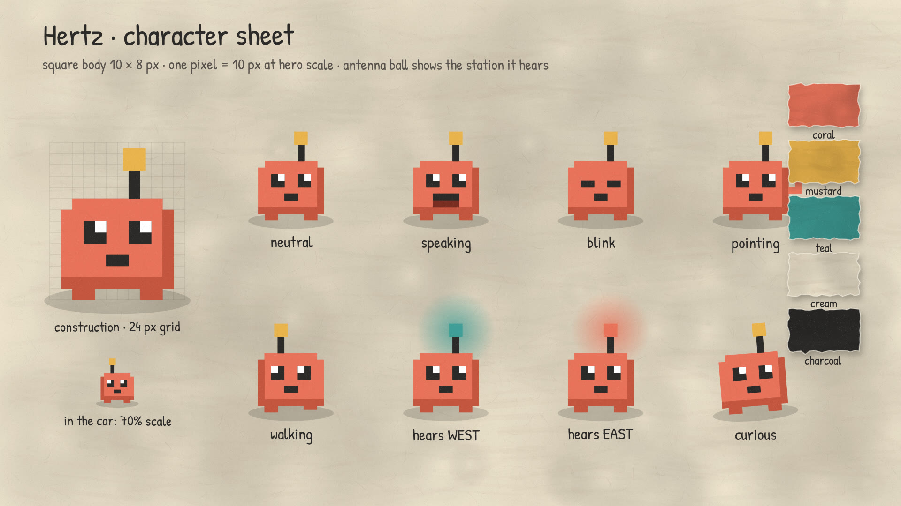

Concept
topic: how a radio works · audience: curious adults who build things, no electronics backgroundThe one idea
A station hides a song in how a fast wave changes. A radio picks one wave, moves it to where a sharp filter waits, and measures that change.
Cause and effect
Whatever the transmitter does to the carrier is exactly what the receiver has to measure. Change the height (AM) and you measure height; change the spacing (FM) and you can throw height away, taking static and the weaker station with it.
Visual system
torn paper, dry gouache, crayon and pencil on a stage inside a terminal window- Materials. Solid objects are torn paper: edges jittered every 9 px, a cream fibre along the tear, a gouache blotch texture multiplied into the fill, and a soft cardboard shadow (5, 8, blur 14).
- Lines. Signals are crayon: a waxy speckled pattern stroked in two offset passes. Diagrams and axes are pencil: a firm line plus a faint ghost.
- Boil. Every object shifts 1–2 px and a fraction of a degree on a new pose every 3 frames (8 per second). Grain boils with them.
- Colour roles. Coral is the song, and the stronger station at the end. Teal is the carrier and the other tower. Mustard marks tools: filter glow, oscillator, limiter, tags. Charcoal is hardware.
- Frame. A dark terminal window holds a cream paper stage with a mustard floor. The film opens and closes on the same shell prompt.
- Type. Patrick Hand for the few labels, JetBrains Mono for the terminal, Atkinson Hyperlegible for captions. Labels never repeat the narration.
Character sheet
Hertz, an original pixel radio: 10 × 8 body, black eyes, receiving antenna
Storyboard
seven scenes · each adds one new piece of understanding · click a frame to jump thereTransition map
no hard cuts: the last object of each scene becomes the first object of the next0 → 1
The typed command wakes the stage: a spotlight opens on the antenna.
1 → 2
The cloud of sample squares regroups into a single crayon line. The numbers become the song.
2 → 3
The AM wave shrinks into the tip of a rising transmitter, and comes back out as rings.
3 → 4
The tangled antenna line straightens and stretches into the frequency axis; its bumps grow into station peaks.
4 → 5
The coral peak lifts out of the filter window and unrolls into the wave the detector receives.
5 → 6
The song outline flattens and thickens into the road. Hertz is standing on it when the car pulls up.
6 → 7
The road scene shrinks away and releases five paper tiles: the whole receiver as one chain.
7 → end
The tiles fly into Hertz's antenna, the ball glows, the spotlight closes to the prompt.
Sound plan
voice first; everything else ducks 7–10 dB under it · loudness −16 LUFSThe film on this page is published without its soundtrack: the narration voice is not licensed for redistribution, and the voice, music and receiver audio were mixed into one track. The captions carry the full narration. The table describes the original mix. To hear the receiver itself, switch on the live radio.
| Layer | What | Where |
|---|---|---|
| Voice | Warm neutral English voice, slowed to 139 wpm with 0.6 s sentence gaps | throughout |
| Music | Felt pad on Am–F–C–G at 92 bpm. The plucked melody is the same A-minor pentatonic figure the WEST AM transmitter broadcasts, so the tune you hear in scene 2 is the song the detector recovers in scene 5. A semitone rub adds tension in scene 3; a soft kick and shaker drive scene 6; the recap resolves to C major. | 1.4 s → end |
| The real receiver | The actual DSP from the radio page, run offline on a schedule: static from the crystal set (1), a dial sweep across the band (3), the tuning landing on WEST (4), the demodulated song (5), then AM static rising as the car drives away, FM without and with the limiter, and the capture snap from drums to pad at the midpoint (6). | scenes 1, 3–6 |
| Tactile | Key clicks on the prompt; paper slaps on every tag and tile; crayon scribble when lines draw; ratchet on the oscillator knob; tiny ticks as the diode passes peaks; a paper thump for the limiter; a click and chime at the capture snap; whooshes on the big transitions. | synced to the frames that cause them |
| Ambience | Low room tone, a soft engine burble in the car. | under everything |
Technical implementation
every frame and sound generated from code-
Renderer. One HTML canvas at 1920×1080 with a pure function
renderFrame(n). Every motion is an analytic function of time, so frames render in any order and in parallel. - Timing. Scene and beat times are read from the voiceover: each sentence was synthesized separately, measured, and placed; visual beats key to sentence starts or to a word's position inside the sentence.
- Textures. Paper grain, gouache blotches and crayon patterns are procedural and seeded, generated once; torn edges are cached per object.
- Boil. Offsets come from a hash of (object, frame ÷ 3), so the wobble is identical on every re-render.
- Frames. Headless Chromium, four workers, 2 149 PNG frames.
-
Audio. NumPy synthesis and mix at 48 kHz, sidechain-style
ducking from the voice envelope,
loudnormto −16 LUFS / −1.5 dBTP. - Encode. H.264 High, yuv420p, 24 fps; captions burned in and shipped as WebVTT.
- Accuracy. The receiver audio in the original mix is the project's own demodulator, not a sample. The mixer, detector, limiter and capture behaviour shown match what the code does.